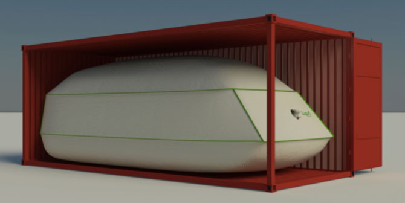

the visual formatting model is an algorithm that processes a document and displays it on a visual media
a basic component of CSS
"CSS assumes the document layout is modeled as a tree of elements." - CSS Positioned Layout Module Level 3, W3C Working Draft
document tree => visual media
The Visual Formatting Model
The visual formatting model comprises of two stages:
Box Generation
Positioning
Positioning:
There are 3 positioning schemes:
Normal flow: Includes block formatting, inline formatting, table layouts and relative positioning
position: static | relative;
Floats: A box is first laid out according to the normal flow, then taken out of the flow and shifted to the left or right as far as possible (to edge of its parent or until it hits another floated element)
float: left | right;
Absolute positioning (includes fixed): Takes the box out of the normal flow, and precisely specifying its location: it is explicitly offset with respect to its containing block. It is removed from the normal flow entirely: it has no impact on siblings, and doesn't flow around other boxes.
position: absolute | fixed;
Flow:
What does it mean when elements are taken out of "flow"?
When boxes are layed out independently of their elements' positions/relationships in the document tree.
E.g. With an absolutely positioned element, the element may be placed anywhere within the visual medium, not respecting its location and relationships in the document tree.
LAYOUT in CSS
LAYOUT in CSS
We've looked under the hood, now lets look at how to control this unholy engine.
CSS3 introduced two more: grid layout (for another time), and flex layout
My goal in doing Flexbox and later Grid was to replace all the crazy float/table/inline-block/etc hacks that I’d had to master as a webdev. All that crap was (a) stupid, (b) hard to remember, and (c) limited in a million annoying ways, so I wanted to make a few well-done layout modules that solved the same problems in simple, easy-to-use, and complete ways.
Tab Atkins Jr., author of the Flexbox and Grid specs
FlexBox foundations
Flexbox basics
flex container
flex item 1
flex item 2
flex item 3
Axes
Available Free Space
The inner width/height of the flex container, minus the sum of the preflex sizes of all the relevant lengths of the children.
If , there is positive available space.
If , there is negative available space.
Flexible lengths
Defining aspect of flexbox layout: the ability to make various lengths of the flexbox items flexible - to distribute either positive or negative available free space amongst them, relative to their growth/shrink factors
width
height
padding
margin
Flex tuple
Each length of a flex item is represented by a flex tuple: a 5-tuple of information about a flexible length, containing:
Minimum size
Maximum size
Preferred size - defaults to 0, can be set to a different value with flex-basis: (or 3rd argument of flex:)
Positive flexibility
Negative flexibility
The flex algorithm
CSS resolves a flexible length into a definite length by:
Collect all lengths, flexible or inflexible, along a single axis, that will share the space.
Sum the preflex sizes of the lengths.
If there is positive available space, then the space is split up among all the flexible lengths with positive flexibility, according to their grow factors, to make the sum equal to the available length.
If there is negative available space, then all the flexible lengths with negative flexibility shrink in proportion to their shrink factors, to make the sum equal to the available length.
Flex containers - the CSS

Flex container
display: flex | inline-flex;
makes an element a flex container
All the immediate children of the flex container automatically become flex items
display: flex makes a box whose outer behaviour is block, and inner is a flex container
display: inline-flex the outer behaviour is inline
Specifies how much the flex item will grow (the flex grow factor), or shrink (the flex shrink factor), relative to its sibling flex items, when the flex container’s positive or negative free space is distributed among them.
Flex basis
flex-basis: <length> | auto; /*default auto*/
defines the initial length (along main axis) of the flex item, before free space is distributed (preflex length), as well as which 'part' of the length of the item is flexed.
When flex is a positive number, it makes the component flexible and it will be sized proportional to its flex value. So a component with flex set to 2 will take twice the space as a component with flex set to 1.
When flex is 0, the component is sized according to width and height and it is inflexible.
When flex is -1, the component is normally sized according width and height. However, if there's not enough space, the component will shrink to its minWidth and minHeight.
RN Flex item properties
aspectRatio:<number>
Aspect ratio control the size of the undefined dimension of a node